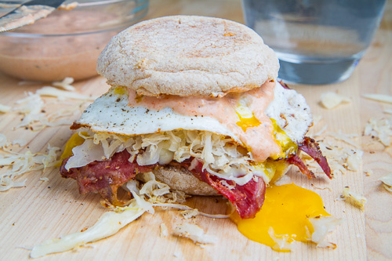

Reuben Breakfast Sandwich

Description
We LOVE a good reuben sandwich. This breakfast
play layers corned beef with melted Sargento®
Sliced Swiss—it’s 100% Real, natural cheese—and
a runny egg on an English muffin. Ready in just
20 minutes, it’s the perfect way to start your
day. Pro tip: We swapped the classic sauerkraut
for a super quick and refreshingly lemony slaw
made with Brussels sprouts. We promise, you won’t
miss it.
Ingredients
For The Russian Dressing
- 1/3 cup mayonanaise
- 2 tbsp. ketchup
- 2 tbsp. pickle relish
- 1 tsp. yellow mustard
- 1/2 tsp. worcestershire sauce
For The Slaw
- 4 brussel sprouts, halved, cored and finely
shredded
- 1 extra-virgin olive oil
- 2 fresh lemon juice
- salt
- freshly ground black pepper
For The Sandwich
- 2 tbsp. extra-virgin olive oil
- 4 large eggs
- 4 tsp. slices deli-sliced corned beef
- 8 slices Sargento sliced swiss natural cheese
- 4 english muffins, lightly toasted
Steps
- Make the dressing: In a small bowl,
combine all the dressing ingredients,
set aside.
- Make the slaw: In a medium bowl,
combine the Brussels sprouts with
oil and lemon juice. Season with salt
and pepper and toss to coat. Set aside.
- Make the sandwich: In a large nonstick
skillet, heat 1 tablespoon of oil over
medium. Crack eggs into the pan. Season
with salt and pepper. Cook for 2 minutes,
or until white is almost completely set.
Flip and cook 1 to 2 minutes more until
the yolk is just barely runny. Remove
eggs to a plate and keep warm.
- Add remaining tablespoon of oil to
the skillet and return to medium heat.
Fold each piece of corned beef in thirds
and arrange in skillet. Top each piece of
corned beef with 2 slices of Swiss cheese.
Cover skillet and cook until cheese is
melted and corned beef is warmed, 1 to 2
minutes.
- Spoon dressing over the bottom of
each English muffin and top each with
an egg and a piece of cheese-topped
corned beef. Pile slaw on top, sandwich,
and serve.